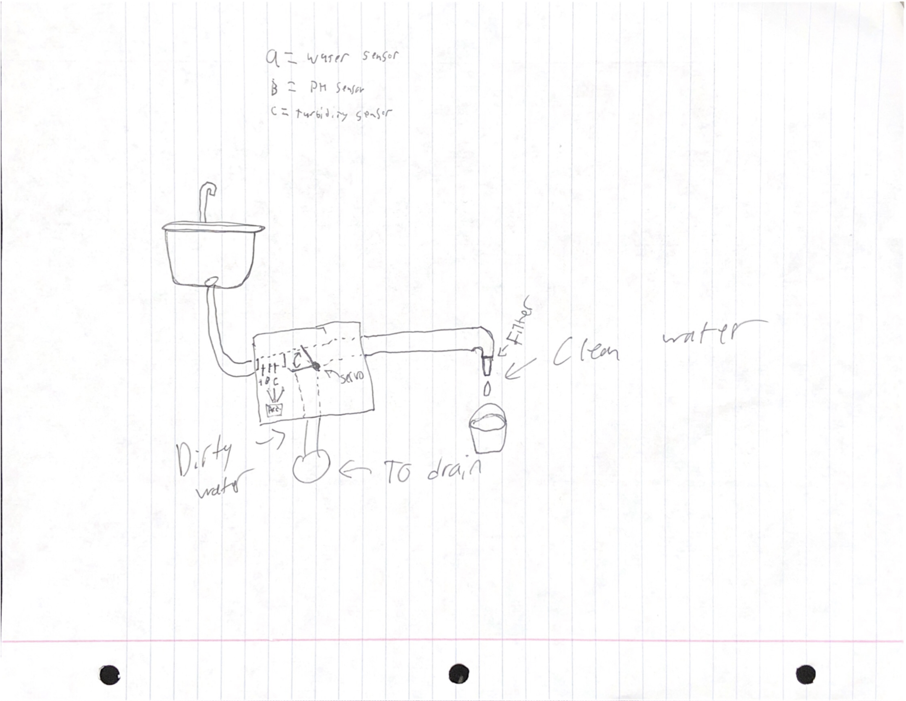
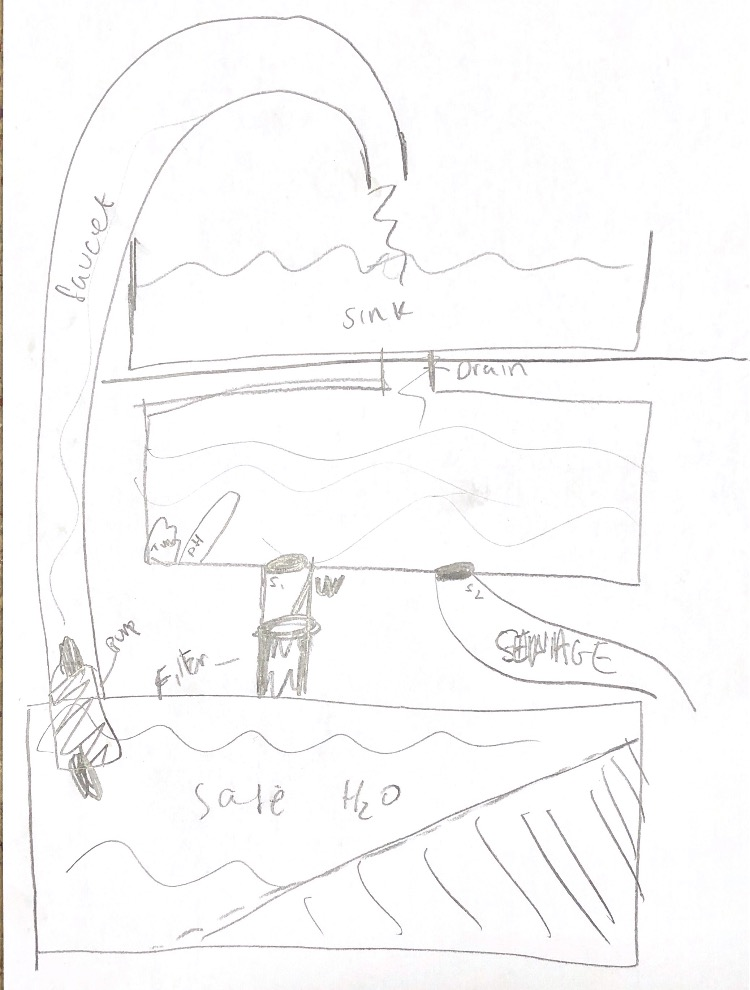

|  |  | ||
|
This is the first design for the water filtration system.
|
This is the second and more detailed version of the design.
|
This is the computerized simulation of the electronics.
|
This is the sanitization box where water goes through the tubes and gets sanatized by UV sanitization.
|
|
This is my team working on the prototype.
|
This is what happened when we tested it before waiting for the glue to dry.
|
This is me fixing it and cleaning up the leaks.
|
This is the logo for the Everything But The Kitchen Sink etched into acrylic.
|
|
This is the lights that we set up on the prototype.
|
This is the fully assembled prototype.
|
We waste water, a lot of water. In a world where potable water is becoming more and more scarce, it is increasingly important to conserve or reuse as much water as possible. According to watercalculator.org, the faucet is the 3rd most water-hogging appliance in the home, using 26 gallons of water per day. (The Toilet and Shower are #1 and #2.) Saving even some of this water for future use will be extremely beneficial for the environment and the economy. Everything but the Kitchen Sink solves this problem, in a big way. Instead of simply sending all water down the drain straight to the sewers, we recycle some of it. Everything but the Kitchen Sink is placed under the sink, inserted into the pipeline coming from the drain. It first determines the cleanliness of the water coming down. If the water coming down the drain is clean enough to be recycled, it is filtered, cleaned, and placed in a reservoir which the user can then take the clean water from, to use however they want. If the water is too dirty to be salvaged, it is sent to the sewer mains. We have created a simple, yet effective solution to minimise the wasting of water in the home.
#include <Wire.h>
#include <LiquidCrystal_I2C.h>
LiquidCrystal_I2C lcd(0x27,20,4);
//PIN VARIABLES
int pinDrain = 2; //The pin going to the solenoid that goes to the normal drain (for dirty water)
int pinRecycle = 4; //The pin going to the solenoid that goes to the filter (for clean-ish water)
int pinTurb = A0; //The pin going to the turbidity sensor
int pinPH = A1; //The pin going to the pH sensor
//VALUE VARIABLES
double pH;
double turbidity;
boolean lightState;
boolean drainState;
boolean recycleState;
//PH SENSOR VALUES
#define Offset 0.00
#define samplingInterval 20
#define printInterval 400
#define ArrayLenth 40
int pHArray[ArrayLenth];
int pHArrayIndex=0;
void drainSolenoid(boolean state) {
if (state == false) {
digitalWrite(pinDrain, LOW);
} else if (state == true) {
digitalWrite(pinDrain, HIGH);
}
}
void recycleSolenoid(boolean state) {
if (state == false) {
digitalWrite(pinRecycle, LOW);
} else if (state == true) {
digitalWrite(pinRecycle, HIGH);
}
}
void updateLCD() {
lcd.setCursor(2,3);
if (drainState == false) {
lcd.print(" CLOSED" );
} else if (drainState == true) {
lcd.print(" OPEN " );
}
lcd.setCursor(12,3);
if (recycleState == false) {
lcd.print(" CLOSED" );
} else if (recycleState == true) {
lcd.print(" OPEN " );
}
}
This is from the pH code:
double avergearray(int* arr, int number){
int i;
int max,min;
double avg;
long amount=0;
if(number<=0){
Serial.println(" Error number for the array to avraging!/n" );
return 0;
}
if(number<5){ //less than 5, calculated directly statistics
for(i=0;i<number;i++){
amount+=arr[i];
}
avg = amount/number;
return avg;
}else{
if(arr[0]<arr[1]){
min = arr[0];max=arr[1];
}
else{
min=arr[1];max=arr[0];
}
for(i=2;i<number;i++){
if(arr[i]<min){
amount+=min; //arr<min
min=arr[i];
}else {
if(arr[i]>max){
amount+=max; //arr>max
max=arr[i];
}else{
amount+=arr[i]; //min<=arr<=max
}
}//if
}//for
avg = (double)amount/(number-2);
}//if
return avg;
}
void setup() {
Serial.begin(9600);
//Pin Declaration
pinMode(pinDrain, OUTPUT);
pinMode(pinRecycle, OUTPUT);
pinMode(pinTurb, INPUT);
pinMode(pinPH, INPUT);
//LCD setup procedure:
lcd.init();
lcd.backlight();
lcd.clear();
lcd.setCursor(0,0);
lcd.print(" pH: " );
lcd.setCursor(9,0);
lcd.print(" Turb.: " );
lcd.setCursor(4,1);
lcd.print(" UV Light: " );
lcd.setCursor(0,2);
lcd.print(" Drain:" );
lcd.setCursor(10,2);
lcd.print(" Filter:" );
}
void loop() {
//PH SENSOR CODE:
static unsigned long samplingTime = millis();
static unsigned long printTime = millis();
static float pHValue,voltage;
if(millis()-samplingTime > samplingInterval)
{
pHArray[pHArrayIndex++]=analogRead(pinPH);
if(pHArrayIndex==ArrayLenth)pHArrayIndex=0;
voltage = avergearray(pHArray, ArrayLenth)*5.0/1024;
pHValue = 3.5*voltage+Offset;
samplingTime=millis();
}
if(millis() - printTime > printInterval) //Every 800 milliseconds, print a numerical, convert the state of the LED indicator
{
Serial.print(" Voltage:" );
Serial.print(voltage,2);
Serial.print(" pH value: " );
Serial.println(pHValue,2);
printTime=millis();
}
lcd.setCursor(4,0);
lcd.print(pHValue,1);
//TURBIDITY SENSOR CODE
double turbidity = map(analogRead(A0),1,811,10,1);
Serial.print(" Turbidity: " );
Serial.println(turbidity);
lcd.setCursor(16,0);
lcd.print(turbidity,1);
if (round(turbidity)<10) {
lcd.setCursor(19,0);
lcd.print(" " );
}
delay(10);
//SOLENOID CONTROL
if (turbidity<4 && pH<8 && pH>6) {
drainSolenoid(false);
recycleSolenoid(true);
} else {
drainSolenoid(true);
recycleSolenoid(false);
}
updateLCD();
}